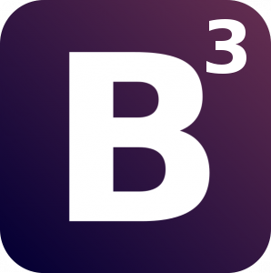
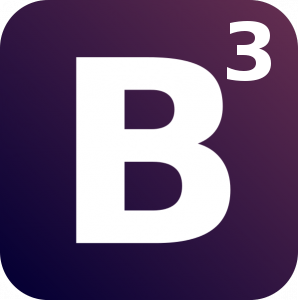

Noted
A sleek, modern application for organizing projects, tasks, and just about anything else.
Live-site | Github
My name is Kevin Tran and I am a self taught web developer.
In getting my first job as a QA Analyst, I hoped that it would get me on the path of becoming a developer. Rather than waiting to potentially have someone give me direction, I effectively decided to change gears and teach myself programming.
I am fixated on establishing myself as a web developer and as a result of that, for the past 5 months, I have spent 15 hours a day, 6 days a week relentlessly studying, researching, and working on projects. I am very strong with Ruby on Rails in the backend along with Backbone in the front end.
I researched the pitfalls of both MVC frameworks and addressed
them in my projects. I understood the 'magic' of Rails by first learning
raw SQL before using ActiveRecord, built a responsive asynchronous
interface with Backbone and properly garbage collecting ghost views, and I
married the two frameworks (as per its intended purpose) by relegating Rails to the
API layer.
I am driven, I want to learn, and I will seek the answers to issues I encounter.
If you think I would be a good fit for your team, feel free to contact me!
My email is trank.kevin@gmail.com


 
